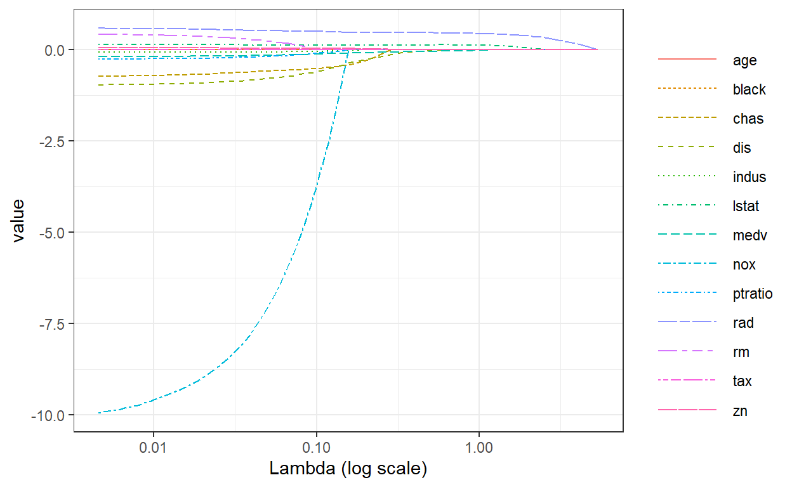
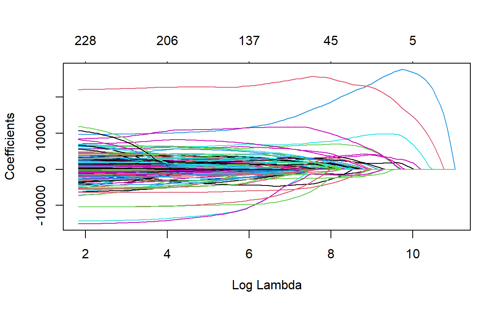
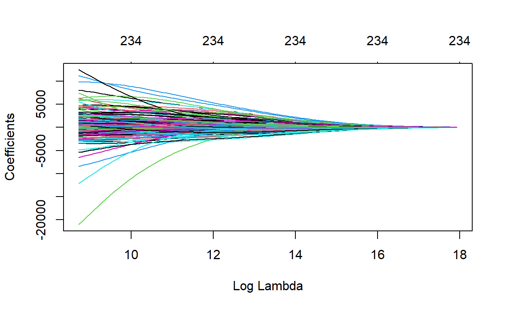

Middle HW
Let \(X = U \Sigma V^{T}\). Under the conditions given in the problem, \(V^{T}V = I\) and \(U^{T}U =I\).
\[ \begin{aligned} (X^{T}X + \lambda I)^{-1} X^{T} &= [(U \Sigma V^{T})^{T} U \Sigma V^{T} + \lambda I]^{-1}(U \Sigma V^{T})^{T} \\ &= [V\Sigma U^{T} U\Sigma V^{T} + \lambda I]^{-1}V\Sigma^{T}U^{T} \\ &= [V\Sigma^{T}\Sigma V^{T} + \lambda I]^{-1}V\Sigma U^{T} \\ &=[V \Sigma^{2} V^{T} + \lambda VV^{T} ]^{-1}V\Sigma U^{T} \\ &=[V(\Sigma ^{2} + \lambda I)V^{T}]^{-1}V\Sigma U^{T} \\ &=(V^{T})^{-1}(\Sigma ^{2} + \lambda I)^{-1}\Sigma U^{T} \end{aligned} \]
\((\Sigma ^{2} + \lambda I)^{-1}\Sigma\) is a diagonal matrix with elements \(\frac{\sigma_{i}}{\sigma^{2}_{i}+\lambda}\) \(i = 1, ... ,d\)
Let’s call this matrix as \(\Sigma^{*}\)
Then,
\[ \begin{aligned} (X^{T}X + \lambda I)^{-1} X^{T} &= V \Sigma^{*} U^{T} \end{aligned} \]
\[ \begin{aligned} \hat{\beta}_{Ridge} &= (X^{T}X + \lambda I)^{-1} X^{T}y \\ &= V \Sigma^{*} U^{T}y \end{aligned} \]
\[ \begin{aligned} 0 \le\|\hat{\beta}_{Ridge}\|_{2} &= \|V \Sigma^{*} U^{T}y\|_{2} \\ &= \|V \Sigma^{*} U^{T}\|_{F}\|y\|_{2} \\ &= \sqrt{tr(\Sigma^{*})}\|y\|_{2} \\ &= \sqrt{\sum_{i = 1}^{d} (\frac{\sigma_{i}}{\sigma^{2}_{i}+\lambda})^{2}}\|y\|_{2} \end{aligned} \]
\(\|\centerdot\|_{F}\) means Frobenious norm
\[ 0\le\|\hat{\beta}_{Ridge}\|_{2}\le\min(\sqrt{\sum_{i = 1}^{d} (\frac{\sigma_{i}}{\sigma^{2}_{i}+\lambda})^{2}}\|y\|_{2},\|\hat{\beta}_{OLS}\|_{2}) \]
As the \(\lambda\) grows, the upper bound of \(\|\hat{\beta}_{Ridge}\|_{2}\) becomes smaller, so the value of \(\|\hat{\beta}_{Ridge}\|_{2}\) becomes smaller.
train <- read.csv(file = "C:/Users/Actuary/Desktop/R with Stan/SKKU-Preditive.m2/_posts/2021-04-09-week7report/train.csv") %>%
janitor::clean_names()
housing_recipe <- train %>%
recipe(sale_price ~ .) %>%
step_rm(id) %>%
step_log(sale_price) %>%
step_modeimpute(all_nominal()) %>%
step_dummy(all_nominal()) %>%
step_meanimpute(all_predictors()) %>%
step_normalize(all_predictors()) %>%
prep(training = train)
train2 <- juice(housing_recipe)
Cross-validation for hyperparameter tuning
set.seed(2021)
validation_split <- vfold_cv(train2, v = 10, strata = sale_price)
tune_spec_Ridge <- linear_reg(penalty = tune(), mixture = 0) %>%
set_engine("glmnet")
Ridge_grid <- grid_regular(penalty(), levels = 100)
tune_spec_Lasso <- linear_reg(penalty = tune(), mixture = 1) %>%
set_engine("glmnet")
Lasso_grid <- grid_regular(penalty(), levels = 100)
workflow_Ridge <- workflow() %>%
add_model(tune_spec_Ridge) %>%
add_formula(sale_price ~ .)
workflow_Lasso <- workflow() %>%
add_model(tune_spec_Lasso) %>%
add_formula(sale_price ~ .)
library(tictoc)
doParallel::registerDoParallel()
tic()
tune_result_Ridge <- workflow_Ridge %>%
tune_grid(validation_split,
grid = Ridge_grid,
metrics = metric_set(rmse))
toc()
15.41 sec elapsedlibrary(tictoc)
doParallel::registerDoParallel()
tic()
tune_result_Lasso <- workflow_Lasso %>%
tune_grid(validation_split,
grid = Lasso_grid,
metrics = metric_set(rmse))
toc()
14.55 sec elapsedresult_R<-tune_result_Ridge %>%
collect_metrics()
result_L<- tune_result_Lasso %>%
collect_metrics()
final_Ridge <-
workflow_Ridge %>%
finalize_workflow(select_best(tune_result_Ridge, 'rmse')) %>%
fit(data = train2)
head(final_Ridge)
$pre
$actions
$actions$formula
$formula
sale_price ~ .
<environment: 0x0000000028374ac8>
$blueprint
Formula blueprint:
# Predictors: 0
# Outcomes: 0
Intercept: TRUE
Novel Levels: FALSE
Composition: tibble
Indicators: traditional
attr(,"class")
[1] "action_formula" "action_pre" "action"
$mold
$mold$predictors
# A tibble: 1,460 x 246
`(Intercept)` ms_sub_class lot_frontage lot_area overall_qual
<dbl> <dbl> <dbl> <dbl> <dbl>
1 1 0.0733 -0.229 -0.207 0.651
2 1 -0.872 0.452 -0.0919 -0.0718
3 1 0.0733 -0.0927 0.0735 0.651
4 1 0.310 -0.456 -0.0969 0.651
5 1 0.0733 0.634 0.375 1.37
6 1 -0.163 0.679 0.360 -0.795
7 1 -0.872 0.225 -0.0434 1.37
8 1 0.0733 -0.00187 -0.0135 0.651
9 1 -0.163 -0.865 -0.441 0.651
10 1 3.15 -0.910 -0.310 -0.795
# ... with 1,450 more rows, and 241 more variables:
# overall_cond <dbl>, year_built <dbl>, year_remod_add <dbl>,
# mas_vnr_area <dbl>, bsmt_fin_sf1 <dbl>, bsmt_fin_sf2 <dbl>,
# bsmt_unf_sf <dbl>, total_bsmt_sf <dbl>, x1st_flr_sf <dbl>,
# x2nd_flr_sf <dbl>, low_qual_fin_sf <dbl>, gr_liv_area <dbl>,
# bsmt_full_bath <dbl>, bsmt_half_bath <dbl>, full_bath <dbl>,
# half_bath <dbl>, bedroom_abv_gr <dbl>, kitchen_abv_gr <dbl>,
# tot_rms_abv_grd <dbl>, fireplaces <dbl>, garage_yr_blt <dbl>,
# garage_cars <dbl>, garage_area <dbl>, wood_deck_sf <dbl>,
# open_porch_sf <dbl>, enclosed_porch <dbl>, x3ssn_porch <dbl>,
# screen_porch <dbl>, pool_area <dbl>, misc_val <dbl>,
# mo_sold <dbl>, yr_sold <dbl>, ms_zoning_FV <dbl>,
# ms_zoning_RH <dbl>, ms_zoning_RL <dbl>, ms_zoning_RM <dbl>,
# street_Pave <dbl>, alley_Pave <dbl>, lot_shape_IR2 <dbl>,
# lot_shape_IR3 <dbl>, lot_shape_Reg <dbl>, land_contour_HLS <dbl>,
# land_contour_Low <dbl>, land_contour_Lvl <dbl>,
# utilities_NoSeWa <dbl>, lot_config_CulDSac <dbl>,
# lot_config_FR2 <dbl>, lot_config_FR3 <dbl>,
# lot_config_Inside <dbl>, land_slope_Mod <dbl>,
# land_slope_Sev <dbl>, neighborhood_Blueste <dbl>,
# neighborhood_BrDale <dbl>, neighborhood_BrkSide <dbl>,
# neighborhood_ClearCr <dbl>, neighborhood_CollgCr <dbl>,
# neighborhood_Crawfor <dbl>, neighborhood_Edwards <dbl>,
# neighborhood_Gilbert <dbl>, neighborhood_IDOTRR <dbl>,
# neighborhood_MeadowV <dbl>, neighborhood_Mitchel <dbl>,
# neighborhood_NAmes <dbl>, neighborhood_NoRidge <dbl>,
# neighborhood_NPkVill <dbl>, neighborhood_NridgHt <dbl>,
# neighborhood_NWAmes <dbl>, neighborhood_OldTown <dbl>,
# neighborhood_Sawyer <dbl>, neighborhood_SawyerW <dbl>,
# neighborhood_Somerst <dbl>, neighborhood_StoneBr <dbl>,
# neighborhood_SWISU <dbl>, neighborhood_Timber <dbl>,
# neighborhood_Veenker <dbl>, condition1_Feedr <dbl>,
# condition1_Norm <dbl>, condition1_PosA <dbl>,
# condition1_PosN <dbl>, condition1_RRAe <dbl>,
# condition1_RRAn <dbl>, condition1_RRNe <dbl>,
# condition1_RRNn <dbl>, condition2_Feedr <dbl>,
# condition2_Norm <dbl>, condition2_PosA <dbl>,
# condition2_PosN <dbl>, condition2_RRAe <dbl>,
# condition2_RRAn <dbl>, condition2_RRNn <dbl>,
# bldg_type_X2fmCon <dbl>, bldg_type_Duplex <dbl>,
# bldg_type_Twnhs <dbl>, bldg_type_TwnhsE <dbl>,
# house_style_X1.5Unf <dbl>, house_style_X1Story <dbl>,
# house_style_X2.5Fin <dbl>, house_style_X2.5Unf <dbl>,
# house_style_X2Story <dbl>, house_style_SFoyer <dbl>, ...
$mold$outcomes
# A tibble: 1,460 x 1
sale_price
<dbl>
1 12.2
2 12.1
3 12.3
4 11.8
5 12.4
6 11.9
7 12.6
8 12.2
9 11.8
10 11.7
# ... with 1,450 more rows
$mold$blueprint
Formula blueprint:
# Predictors: 245
# Outcomes: 1
Intercept: TRUE
Novel Levels: FALSE
Composition: tibble
Indicators: traditional
$mold$extras
$mold$extras$offset
NULL
attr(,"class")
[1] "stage_pre" "stage"
$fit
$actions
$actions$model
$spec
Linear Regression Model Specification (regression)
Main Arguments:
penalty = 0.196304065004027
mixture = 0
Computational engine: glmnet
$formula
NULL
attr(,"class")
[1] "action_model" "action_fit" "action"
$fit
parsnip model object
Fit time: 90ms
Call: glmnet::glmnet(x = maybe_matrix(x), y = y, family = "gaussian", alpha = ~0)
Df %Dev Lambda
1 245 0.00 326.30
2 245 3.13 297.30
3 245 3.43 270.90
4 245 3.75 246.80
5 245 4.10 224.90
6 245 4.48 204.90
7 245 4.90 186.70
8 245 5.35 170.10
9 245 5.85 155.00
10 245 6.38 141.30
11 245 6.96 128.70
12 245 7.59 117.30
13 245 8.27 106.90
14 245 9.01 97.36
15 245 9.80 88.71
16 245 10.66 80.83
17 245 11.58 73.65
18 245 12.57 67.11
19 245 13.63 61.15
20 245 14.77 55.71
21 245 15.98 50.76
22 245 17.28 46.25
23 245 18.65 42.15
24 245 20.11 38.40
25 245 21.65 34.99
26 245 23.28 31.88
27 245 24.98 29.05
28 245 26.77 26.47
29 245 28.63 24.12
30 245 30.57 21.97
31 245 32.57 20.02
32 245 34.64 18.24
33 245 36.76 16.62
34 245 38.92 15.15
35 245 41.12 13.80
36 245 43.35 12.57
37 245 45.60 11.46
38 245 47.85 10.44
39 245 50.09 9.51
40 245 52.32 8.67
41 245 54.51 7.90
42 245 56.67 7.20
43 245 58.78 6.56
44 245 60.83 5.97
45 245 62.81 5.44
46 245 64.72 4.96
47 245 66.55 4.52
48 245 68.30 4.12
49 245 69.97 3.75
50 245 71.54 3.42
51 245 73.03 3.12
52 245 74.43 2.84
53 245 75.74 2.59
54 245 76.97 2.36
55 245 78.12 2.15
56 245 79.19 1.96
57 245 80.19 1.78
58 245 81.12 1.62
59 245 81.98 1.48
60 245 82.77 1.35
61 245 83.51 1.23
62 245 84.19 1.12
63 245 84.83 1.02
64 245 85.41 0.93
65 245 85.96 0.85
66 245 86.46 0.77
67 245 86.93 0.70
68 245 87.36 0.64
69 245 87.76 0.58
70 245 88.13 0.53
71 245 88.47 0.48
72 245 88.79 0.44
73 245 89.09 0.40
74 245 89.36 0.37
75 245 89.62 0.33
76 245 89.86 0.30
77 245 90.08 0.28
78 245 90.29 0.25
79 245 90.48 0.23
80 245 90.66 0.21
81 245 90.83 0.19
82 245 90.99 0.17
83 245 91.14 0.16
84 245 91.27 0.14
85 245 91.40 0.13
86 245 91.52 0.12
87 245 91.63 0.11
88 245 91.74 0.10
89 245 91.84 0.09
90 245 91.93 0.08
91 245 92.02 0.08
92 245 92.10 0.07
93 245 92.18 0.06
94 245 92.25 0.06
95 245 92.32 0.05
96 245 92.39 0.05
97 245 92.45 0.04
98 245 92.51 0.04
99 245 92.57 0.04
100 245 92.63 0.03
attr(,"class")
[1] "stage_fit" "stage"
$post
$actions
list()
attr(,"class")
[1] "stage_post" "stage"
$trained
[1] TRUE final_Lasso <-
workflow_Lasso %>%
finalize_workflow(select_best(tune_result_Lasso, 'rmse')) %>%
fit(data = train2)
head(final_Lasso)
$pre
$actions
$actions$formula
$formula
sale_price ~ .
<environment: 0x00000000284019f8>
$blueprint
Formula blueprint:
# Predictors: 0
# Outcomes: 0
Intercept: TRUE
Novel Levels: FALSE
Composition: tibble
Indicators: traditional
attr(,"class")
[1] "action_formula" "action_pre" "action"
$mold
$mold$predictors
# A tibble: 1,460 x 246
`(Intercept)` ms_sub_class lot_frontage lot_area overall_qual
<dbl> <dbl> <dbl> <dbl> <dbl>
1 1 0.0733 -0.229 -0.207 0.651
2 1 -0.872 0.452 -0.0919 -0.0718
3 1 0.0733 -0.0927 0.0735 0.651
4 1 0.310 -0.456 -0.0969 0.651
5 1 0.0733 0.634 0.375 1.37
6 1 -0.163 0.679 0.360 -0.795
7 1 -0.872 0.225 -0.0434 1.37
8 1 0.0733 -0.00187 -0.0135 0.651
9 1 -0.163 -0.865 -0.441 0.651
10 1 3.15 -0.910 -0.310 -0.795
# ... with 1,450 more rows, and 241 more variables:
# overall_cond <dbl>, year_built <dbl>, year_remod_add <dbl>,
# mas_vnr_area <dbl>, bsmt_fin_sf1 <dbl>, bsmt_fin_sf2 <dbl>,
# bsmt_unf_sf <dbl>, total_bsmt_sf <dbl>, x1st_flr_sf <dbl>,
# x2nd_flr_sf <dbl>, low_qual_fin_sf <dbl>, gr_liv_area <dbl>,
# bsmt_full_bath <dbl>, bsmt_half_bath <dbl>, full_bath <dbl>,
# half_bath <dbl>, bedroom_abv_gr <dbl>, kitchen_abv_gr <dbl>,
# tot_rms_abv_grd <dbl>, fireplaces <dbl>, garage_yr_blt <dbl>,
# garage_cars <dbl>, garage_area <dbl>, wood_deck_sf <dbl>,
# open_porch_sf <dbl>, enclosed_porch <dbl>, x3ssn_porch <dbl>,
# screen_porch <dbl>, pool_area <dbl>, misc_val <dbl>,
# mo_sold <dbl>, yr_sold <dbl>, ms_zoning_FV <dbl>,
# ms_zoning_RH <dbl>, ms_zoning_RL <dbl>, ms_zoning_RM <dbl>,
# street_Pave <dbl>, alley_Pave <dbl>, lot_shape_IR2 <dbl>,
# lot_shape_IR3 <dbl>, lot_shape_Reg <dbl>, land_contour_HLS <dbl>,
# land_contour_Low <dbl>, land_contour_Lvl <dbl>,
# utilities_NoSeWa <dbl>, lot_config_CulDSac <dbl>,
# lot_config_FR2 <dbl>, lot_config_FR3 <dbl>,
# lot_config_Inside <dbl>, land_slope_Mod <dbl>,
# land_slope_Sev <dbl>, neighborhood_Blueste <dbl>,
# neighborhood_BrDale <dbl>, neighborhood_BrkSide <dbl>,
# neighborhood_ClearCr <dbl>, neighborhood_CollgCr <dbl>,
# neighborhood_Crawfor <dbl>, neighborhood_Edwards <dbl>,
# neighborhood_Gilbert <dbl>, neighborhood_IDOTRR <dbl>,
# neighborhood_MeadowV <dbl>, neighborhood_Mitchel <dbl>,
# neighborhood_NAmes <dbl>, neighborhood_NoRidge <dbl>,
# neighborhood_NPkVill <dbl>, neighborhood_NridgHt <dbl>,
# neighborhood_NWAmes <dbl>, neighborhood_OldTown <dbl>,
# neighborhood_Sawyer <dbl>, neighborhood_SawyerW <dbl>,
# neighborhood_Somerst <dbl>, neighborhood_StoneBr <dbl>,
# neighborhood_SWISU <dbl>, neighborhood_Timber <dbl>,
# neighborhood_Veenker <dbl>, condition1_Feedr <dbl>,
# condition1_Norm <dbl>, condition1_PosA <dbl>,
# condition1_PosN <dbl>, condition1_RRAe <dbl>,
# condition1_RRAn <dbl>, condition1_RRNe <dbl>,
# condition1_RRNn <dbl>, condition2_Feedr <dbl>,
# condition2_Norm <dbl>, condition2_PosA <dbl>,
# condition2_PosN <dbl>, condition2_RRAe <dbl>,
# condition2_RRAn <dbl>, condition2_RRNn <dbl>,
# bldg_type_X2fmCon <dbl>, bldg_type_Duplex <dbl>,
# bldg_type_Twnhs <dbl>, bldg_type_TwnhsE <dbl>,
# house_style_X1.5Unf <dbl>, house_style_X1Story <dbl>,
# house_style_X2.5Fin <dbl>, house_style_X2.5Unf <dbl>,
# house_style_X2Story <dbl>, house_style_SFoyer <dbl>, ...
$mold$outcomes
# A tibble: 1,460 x 1
sale_price
<dbl>
1 12.2
2 12.1
3 12.3
4 11.8
5 12.4
6 11.9
7 12.6
8 12.2
9 11.8
10 11.7
# ... with 1,450 more rows
$mold$blueprint
Formula blueprint:
# Predictors: 245
# Outcomes: 1
Intercept: TRUE
Novel Levels: FALSE
Composition: tibble
Indicators: traditional
$mold$extras
$mold$extras$offset
NULL
attr(,"class")
[1] "stage_pre" "stage"
$fit
$actions
$actions$model
$spec
Linear Regression Model Specification (regression)
Main Arguments:
penalty = 0.00954548456661833
mixture = 1
Computational engine: glmnet
$formula
NULL
attr(,"class")
[1] "action_model" "action_fit" "action"
$fit
parsnip model object
Fit time: 141ms
Call: glmnet::glmnet(x = maybe_matrix(x), y = y, family = "gaussian", alpha = ~1)
Df %Dev Lambda
1 0 0.00 0.32630
2 1 11.34 0.29730
3 1 20.75 0.27090
4 1 28.57 0.24680
5 1 35.05 0.22490
6 2 40.93 0.20490
7 2 46.54 0.18670
8 3 51.78 0.17010
9 3 56.20 0.15500
10 3 59.86 0.14130
11 3 62.90 0.12870
12 4 65.68 0.11730
13 5 68.11 0.10690
14 5 70.33 0.09736
15 8 72.27 0.08871
16 8 73.96 0.08083
17 8 75.37 0.07365
18 10 76.72 0.06711
19 11 77.96 0.06115
20 13 79.05 0.05571
21 14 80.06 0.05076
22 14 80.91 0.04625
23 14 81.61 0.04215
24 15 82.20 0.03840
25 17 82.75 0.03499
26 19 83.25 0.03188
27 20 83.73 0.02905
28 22 84.27 0.02647
29 23 84.74 0.02412
30 27 85.24 0.02197
31 30 85.77 0.02002
32 34 86.31 0.01824
33 37 86.82 0.01662
34 39 87.28 0.01515
35 43 87.69 0.01380
36 45 88.06 0.01257
37 49 88.40 0.01146
38 51 88.73 0.01044
39 55 89.07 0.00951
40 59 89.37 0.00867
41 63 89.63 0.00790
42 67 89.88 0.00720
43 70 90.10 0.00656
44 76 90.29 0.00597
45 80 90.46 0.00544
46 84 90.61 0.00496
47 88 90.75 0.00452
48 93 90.88 0.00412
49 100 91.02 0.00375
50 105 91.14 0.00342
51 109 91.26 0.00312
52 122 91.37 0.00284
53 128 91.49 0.00259
54 137 91.62 0.00236
55 143 91.90 0.00215
56 149 92.19 0.00196
57 151 92.44 0.00178
58 156 92.64 0.00162
59 164 92.83 0.00148
60 171 93.03 0.00135
61 177 93.21 0.00123
62 180 93.36 0.00112
63 184 93.49 0.00102
64 185 93.60 0.00093
65 190 93.70 0.00085
66 193 93.78 0.00077
67 201 93.85 0.00070
68 204 93.91 0.00064
69 207 93.97 0.00058
70 208 94.01 0.00053
71 213 94.06 0.00048
72 213 94.10 0.00044
73 212 94.13 0.00040
74 212 94.15 0.00037
75 214 94.18 0.00033
76 216 94.19 0.00030
77 217 94.21 0.00028
78 221 94.23 0.00025
79 221 94.24 0.00023
80 223 94.25 0.00021
81 227 94.26 0.00019
82 228 94.27 0.00017
83 229 94.28 0.00016
84 233 94.29 0.00014
85 233 94.30 0.00013
86 233 94.30 0.00012
87 234 94.31 0.00011
88 233 94.31 0.00010
89 237 94.32 0.00009
90 236 94.32 0.00008
91 238 94.33 0.00008
92 238 94.33 0.00007
93 238 94.33 0.00006
94 238 94.33 0.00006
95 238 94.34 0.00005
96 239 94.34 0.00005
97 239 94.34 0.00004
98 240 94.34 0.00004
99 239 94.34 0.00004
100 239 94.34 0.00003
attr(,"class")
[1] "stage_fit" "stage"
$post
$actions
list()
attr(,"class")
[1] "stage_post" "stage"
$trained
[1] TRUEThis is example from HW pdf
Boston=na.omit(Boston)
x=model.matrix(crim~.,Boston)[,-1]
y=as.matrix(Boston$crim)
lasso.mod =glmnet(x,y, alpha =1)
beta=coef(lasso.mod)
tmp <- as.data.frame(as.matrix(beta))
tmp$coef <- row.names(tmp)
tmp <- reshape::melt(tmp, id = "coef")
tmp$variable <- as.numeric(gsub("s", "", tmp$variable))
tmp$lambda <- lasso.mod$lambda[tmp$variable+1] # extract the lambda values
tmp$norm <- apply(abs(beta[-1,]), 2, sum)[tmp$variable+1] # compute L1 norm
# x11(width = 13/2.54, height = 9/2.54)
ggplot(tmp[tmp$coef != "(Intercept)",], aes(lambda, value, color = coef, linetype = coef)) +
geom_line() +
scale_x_log10() +
xlab("Lambda (log scale)") +
guides(color = guide_legend(title = ""),
linetype = guide_legend(title = "")) +
theme_bw() +
theme(legend.key.width = unit(3,"lines"))

x <- model.matrix(sale_price ~ . , train2)[,-37]
y <- train$sale_price
train_sam <- sample(1:nrow(x), nrow(x)/2)
test_sam <-(-train_sam)
ytest <- y[test_sam]
cv.lasso <- cv.glmnet(x[train_sam,], y[train_sam], alpha = 1)
lasso.coef <- predict(cv.lasso, type = "coefficients", s=cv.lasso$lambda.min )
plot(cv.lasso$glmnet.fit, xvar = "lambda")

x <- model.matrix(sale_price ~ . , train2)[,-37]
y <- train$sale_price
train_sam <- sample(1:nrow(x), nrow(x)/2)
test_sam <-(-train_sam)
ytest <- y[test_sam]
cv.ridge <- cv.glmnet(x[train_sam,], y[train_sam], alpha = 0)
lasso.coef <- predict(cv.ridge , type = "coefficients", s=cv.lasso$lambda.min )
plot(cv.ridge$glmnet.fit, xvar = "lambda")
